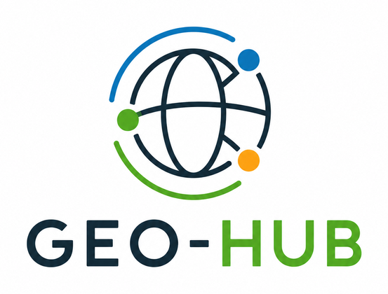

Servizi GIS per Comuni
Supporto tecnico e soluzioni dedicate per uffici tecnici, SIT, urbanistica e gestione del territorio.
Soluzioni GIS per la pubblica amministrazione
GEO-HUB realizza infrastrutture geospaziali affidabili per uffici tecnici, SIT e organizzazioni territoriali che cercano stabilità, chiarezza operativa e supporto tecnico continuativo.
Dal WebGIS al PostGIS gestito, dai server GIS alla manutenzione ordinaria: un unico riferimento per pubblicare, mantenere e far evolvere servizi cartografici professionali in modo semplice e sostenibile.

Organizziamo database, WebGIS e server geospaziali per rendere più semplice la gestione tecnica del territorio.
Servizi pensati per stabilità operativa, semplicità di gestione e continuità nel tempo.
Servizi
GEO-HUB realizza e mantiene piattaforme geospaziali statiche e server-side, con attenzione particolare a affidabilità, sicurezza e facilità di manutenzione.
Supporto tecnico e soluzioni dedicate per uffici tecnici, SIT, urbanistica e gestione del territorio.
Portali cartografici consultabili da browser, con pubblicazione di mappe, tematismi e layer informativi.
Database geografici configurati e mantenuti con backup, ottimizzazione e accessi controllati.
Server Linux e stack GIS predisposti per produzione, reverse proxy, SSL e monitoraggio essenziale.
Servizi per metadati, catalogazione, open data e integrazione con sistemi territoriali esistenti.
Assistenza continuativa, aggiornamenti programmati e presidio tecnico per ambienti GIS pubblici.
Per il tuo Comune
GEO-HUB affianca Comuni e uffici tecnici nella gestione quotidiana dei dati territoriali, dalla strutturazione del database fino alla pubblicazione di servizi WebGIS consultabili e mantenibili nel tempo.
Creiamo database geografici separati per ogni Comune, con utenti dedicati, accessi controllati e struttura ordinata per lavorare da QGIS.
Pubblichiamo mappe e layer territoriali consultabili da browser, usando strumenti open source come Lizmap, G3W-Suite e QGIS Server.
Configuriamo server Linux per servizi GIS, con Docker, reverse proxy, HTTPS, backup e manutenzione tecnica.
Prepariamo connessioni ai database PostGIS per tecnici comunali, professionisti esterni e collaboratori autorizzati.
Aiutiamo a portare shapefile, geopackage e layer QGIS dentro strutture dati più ordinate, condivise e mantenibili.
Offriamo assistenza tecnica per aggiornamenti, problemi di accesso, manutenzione ordinaria e piccoli interventi evolutivi.
Tecnologie
GEO-HUB utilizza tecnologie open source e infrastrutture server affidabili per costruire servizi GIS mantenibili, interoperabili e adatti alle esigenze operative degli enti pubblici.
Gestione strutturata dei dati territoriali con database geospaziali, utenti dedicati, permessi controllati e accesso da QGIS.
Pubblicazione di mappe, layer e tematismi consultabili da browser, con strumenti adatti alla consultazione tecnica e amministrativa.
Configurazione e gestione di server dedicati ai servizi GIS, con ambienti separati, reverse proxy, HTTPS e monitoraggio essenziale.
Accessi ordinati per tecnici, collaboratori e amministratori, con attenzione a credenziali, permessi, esposizione dei servizi e manutenzione.
Strategie di backup e ripristino per ridurre il rischio di perdita dati e garantire maggiore continuità operativa nel tempo.
Uso di soluzioni aperte per evitare dipendenze inutili, favorire l'integrazione con sistemi esistenti e mantenere controllo sui dati.
Perché GEO-HUB
Configurazioni essenziali, leggibili e pensate per ridurre complessità e punti di guasto.
Soluzioni adatte a processi amministrativi, esigenze di continuità e team tecnici con risorse limitate.
Uso di tecnologie aperte per preservare autonomia, interoperabilità e sostenibilità nel lungo periodo.
Un interlocutore unico per infrastruttura, servizi GIS, aggiornamenti e assistenza operativa.
Contatti
GEO-HUB realizza infrastrutture GIS statiche o server-based pronte per essere pubblicate, mantenute e affidate con semplicità a un ente o a un ufficio tecnico.